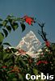

My own story from travelling in
NepalClick here
Content Page
After India and Calcutta is was a relief to sit down and relax and let the bus take us to Nepal. I couldn't wait to see the mountains and breathe the fresh air. Before we started the journey we were not fully aware that this trip would take over two days in an overcrowded bus with sometimes cackling hens and other times baling sheep before we would finally reach our destination. When we started out I was sitting next to a woman with a big apron on her dress. After a while I had a feeling that she was looking at me. I tried not to look but she must have figured that I seemed to be a friendly person because she started to smile, took out an egg of her apron pocket ,peeled it and handed it to me. I suppose I looked half starved after losing a stone in India. I thought the gesture was very nice but did not know what to do as I just couldn't make my self eat an egg in this dirty and overcrowded bus. I smiled back and shook my head in what I thought polite way. I don't think she took any offense as she after a while ate the egg herself. Somebody thought of a brilliant idea of climbing up on the roof of the bus together with our luggage. The view was incredible . It was much nicer up here in the fresh air and we did not have to share the space with hens and sheep either.
We were slowly getting higher and higher up into the mountains on a very narrow road. The roads here are very dangerous. The mountain is on one side and on the other, nothing just fresh air.. When the bus was turning a bend the driver beeped the horn and if he did not hear anything he carried on. If somebody beeped on the other side of the corner the driver would slow down and let them pass. I could never figure out who was supposed to go first, the veichele coming from left or right.
The landscape was breathtaking with the mountains and the blue river down below. Lots of birds in all different colors and monkeys hanging out of the trees and playfully running alongside the bus. After a day of traveling we saw that there were busses in front of us and finally we had to stop. Everyone wondered what the reason was for a traffic jam up here in the mountains. We soon enough found out that the reason for the stop was a bus that had accidentally driven off the road. The bus had plunged into the river 50 meters down. We heard that all forty people on the bus had died. This tragic accident made us forget about the beauty around us for a while.
Katmandu
We eventually reached Katmandu which is the capital of Nepal. We did the usual trip to the G.P.O and got a load of letters from family and friends back home. We only wished that they knew how much a letter meant to us. Katmandu is a nice city where the history of the country and the increasing modernization meet in one place. We were delighted when we booked in to our accommodation and saw that the bathroom had a proper toilet and nearly clean sheets. According to our by now trained eye only one had slept in them sheets before. We went out to look at this city and found that you need a lot of patience to find you way on these narrow and often unnamed streets. People were very helpful though when you couldn't find your way. There was lots of ancient temples and shrines with carved doors and windows. Also lots of souvenir sellers offering all kind of services and things to bring home. We also needed to gear up for our trip up in the mountains. Coming from India we had no warm jumpers and trekking boots. As we were living on a budget our trainers had to do for the trekking but we bought jumpers to keep us warm when up in the mountains.
When it comes to food the Nepalese food is fairly tasteless compared to their Indian cousins. On the other hand you can get anything here from Swedish smorgasbord to Mexican tacos, Thai chocolate and lots of other things. We had our first meal of meat that we had had in months. I think it was buffalo steak and not very nice at all very tough. After a few days of wining, dining and shopping we got the bus to Phokara, a small town west of Katmandu.
Trekking
This is where most people start out their trekking from and this was the reason why we were here. Our plan was to do a seven day trek in the Annapurna region which is the bottom part of mount Everest. We had to register for a trekking permit, this is so they know how many people are up in the mountains. If you are not back the day you said you would be they should start looking for you hopefully. We packed our rucksack and stored unnecessary belongings in a storage safe. We were fit but there was no need to carry more weight then necessary. I started off with a rucksack that weighed 20 kilo, a sleeping bag, lots of film and an exited mind.
The walk was fairly easy but in some places it was a bit harder where you were walking uphill for hours. We walked for approximately six hours the first day. The incredible beautiful views with small villages on the side of the mountains and the polite Nepalese people made you forget about the hard work. We stopped and slept in the village where we got accommodation and food. After four days we came to Ghorepani This was the place we wanted to reach before the climb down. At five a clock in the morning we climbed up on Phoon Hill where we could see some of the highest peaks in the Himalayas in the sunrise. It was almost divine to see the sun slowly rise and you could see one after another of the white peaks. This picture will always stay in my mind.
Previous Page Top of Page Next Page